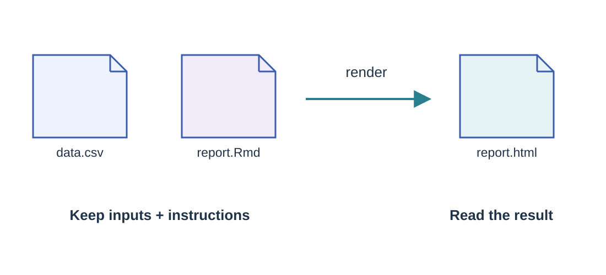
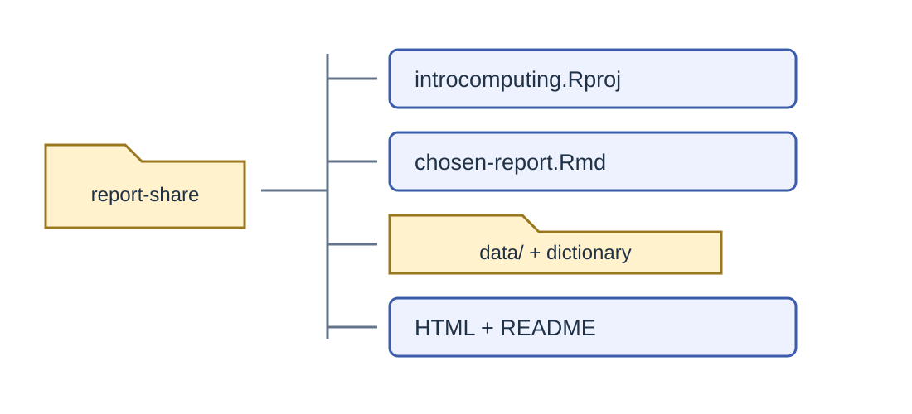
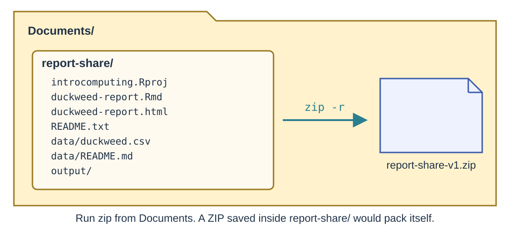
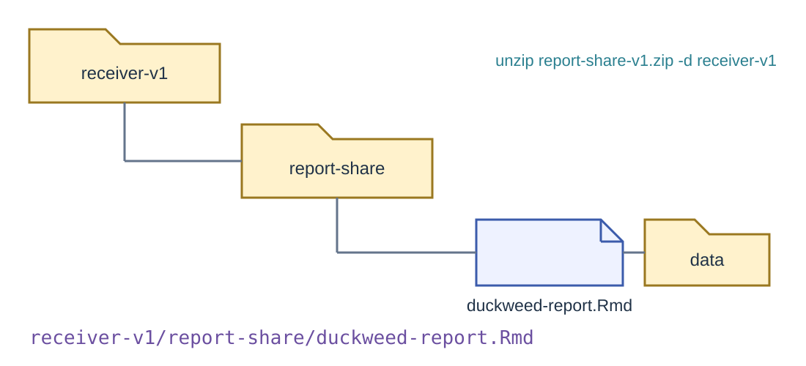
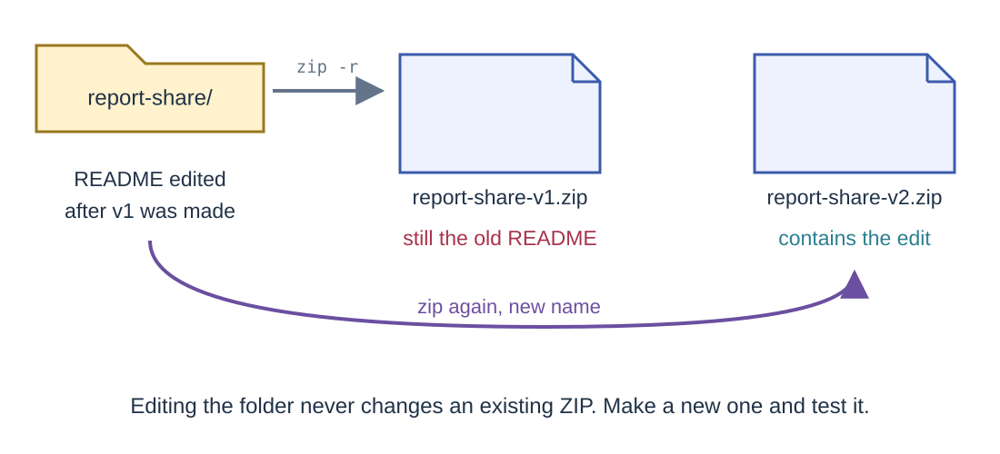
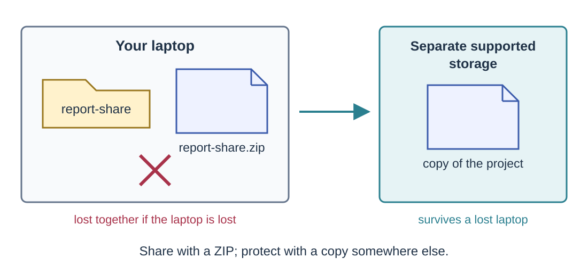
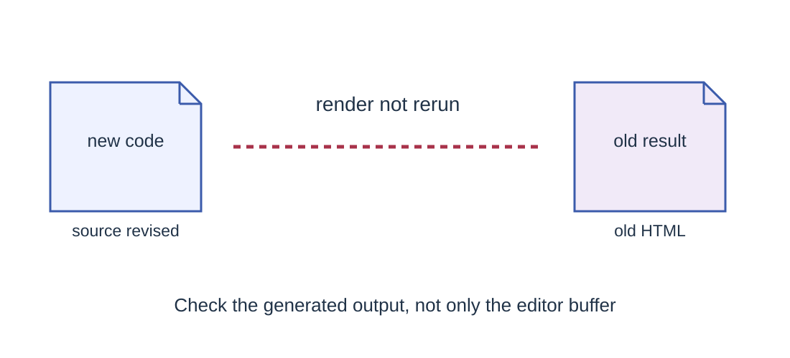

Reproduce and share your report
Day 24 — Will it work on someone else’s computer?
About this lecture
Your duckweed report is finished. Your supervisor wants to check it, a lab partner wants to add next month’s flasks, and you will need it again for your thesis. If someone else opens your project, do they get the same report? Often they do not: the report quietly relied on something that only existed on your screen.
Today you will:
- render the report from a fresh R session, so it cannot lean on hidden objects;
- pack the project as a ZIP and test it as the receiver, in a new folder;
- handle corrections: a ZIP is a snapshot, and it is not a backup;
- separate “it renders” from “it is right”.
Day 23 produced the report; today makes it shareable. Day 25 consolidates the whole workflow.
The problem: it works on my screen
A report can run for you and fail for anyone else because it depends on:
- an object you created in the Console, not in the report;
- a package loaded only in the Console;
- a personal path such as
C:/Users/anna/Desktop/duckweed.csv; - a data file that is not in the project.
You will not notice any of these on your own computer.

Source and result have different jobs

- The HTML is for reading. It cannot be re-run on new data.
- The
.Rmdplus the CSV is the recipe. That is what makes the result repeatable. - Share both; keep the source as the master copy.
Test 1: restart R, then Knit
Session → Restart R, then Knit without running anything in the Console. The report must now import, calculate and plot by itself.
| Error | Usual cause | Repair |
|---|---|---|
object 'duckweed' not found |
Import only run in the Console | Put the import in a chunk before it is used |
could not find function |
Package loaded only in the Console | Add library() to the setup chunk |
cannot open file |
Personal path, or file not in project | Use data/duckweed.csv and keep the file |
| Old text, new numbers | Result typed by hand | Check the sentence, or use inline R |
Read the first error and the chunk it names. Fix one thing, then Knit again.
What the receiver needs
Copy into a new report-share folder outside your project:
introcomputing.Rproj- your report, here
duckweed-report.Rmd, and its HTML data/duckweed.csvanddata/README.mdoutput/if the report saves there- a
README.txt: data simulated, file to render, packages needed
The .Rproj contains no data; a shortcut is not a copy.

Pack the folder as a ZIP
$ ls
report-share
$ zip -r report-share-v1.zip report-share/
adding: report-share/ (stored 0%)
adding: report-share/output/ (stored 0%)
adding: report-share/output/README.txt (stored 0%)
adding: report-share/README.txt (deflated 19%)
adding: report-share/duckweed-report.html (deflated 66%)
adding: report-share/duckweed-report.Rmd (deflated 14%)
adding: report-share/introcomputing.Rproj (deflated 26%)
adding: report-share/data/ (stored 0%)
adding: report-share/data/README.md (deflated 61%)
adding: report-share/data/duckweed.csv (deflated 59%)
$ ls
report-share
report-share-v1.zip
- Run it from the folder that contains
report-share(here Documents), so the ZIP lands beside it, not inside it. -rpacks the folder with everything inside it;zipnames each file it adds.lsshows the new ZIP. Use a new name for every version.
Test 2: open it as the receiver would
$ unzip -l report-share-v1.zip
Archive: report-share-v1.zip
Length Date Time Name
...
397 2026-11-19 16:45 report-share/data/duckweed.csv
638418 10 files
$ unzip report-share-v1.zip -d receiver-v1
Archive: report-share-v1.zip
creating: receiver-v1/report-share/
...
inflating: receiver-v1/report-share/data/duckweed.csv
$ ls receiver-v1
report-share
$ ls receiver-v1/report-share
data duckweed-report.html duckweed-report.Rmd
introcomputing.Rproj output README.txt
unzip -llists the 10 entries without unpacking: is everything there?- Extraction keeps the packed folder: one extra level.
- Open
receiver-v1/report-share/introcomputing.Rproj, restart R, Knit. Expect 10 and 9 flasks, means 32.28 and 39.63 mg.
Two fresh starts test different things

- Restart R finds objects that only lived in memory.
- New folder finds missing files and paths that point back to your original.
- Together they are the closest you can get to the receiver’s computer on your own laptop.
A ZIP is a snapshot
- You fix the README after making v1. Neither
v1.zipnorreceiver-v1changes. - Make
report-share-v2.zip, extract toreceiver-v2, and check the fix is there. - A new name is not proof. Open the file.
- Add a line to the README saying what changed in v2.

Sharing is not backup

A ZIP next to the original protects against nothing if the laptop is lost, stolen or broken. Keep a copy of the project on the supported separate storage, and note where.
It renders ≠ it is right
Two tests, each in a disposable copy of the project:
| What you change | Does Knit work? | Is the report right? |
|---|---|---|
Rename data/duckweed.csv |
No: it stops with an error naming the file | — |
| Add the sentence “All 20 flasks had a measured biomass.” | Yes: the HTML looks fine | No: only 19 were weighed (F17 spilled) |
- R notices a missing file. It cannot notice a wrong sentence.
- After every render, read the claims against the numbers in the tables and figures.
A source edit does not update the HTML

After any change, Knit again and open the new HTML. Compare numbers at sensible precision: 33.91818 and 33.92 mg are the same mean; 34.32 mg is a different analysis.
Summary
| Check | What it finds |
|---|---|
| Restart R, then Knit | Objects and packages that existed only in the Console |
| Extract the ZIP into a new folder, then Knit | Missing files and personal paths |
| Make v2 and check the fix in a new extraction | Old snapshots sent by mistake |
| Copy on separate storage | Protection against losing the laptop |
| Read the claims against the numbers | Wrong sentences that render without error |
Next (Day 25, consolidate): the whole workflow once more, from files to a shared report.
Now: open the Day 24 exercises. Leave with a tested report-share-v2.zip, algae-brief.Rmd with its HTML, a backup copy, and reports/reproduction-log.txt.